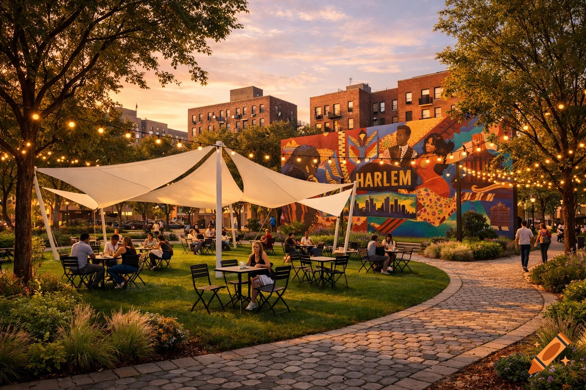
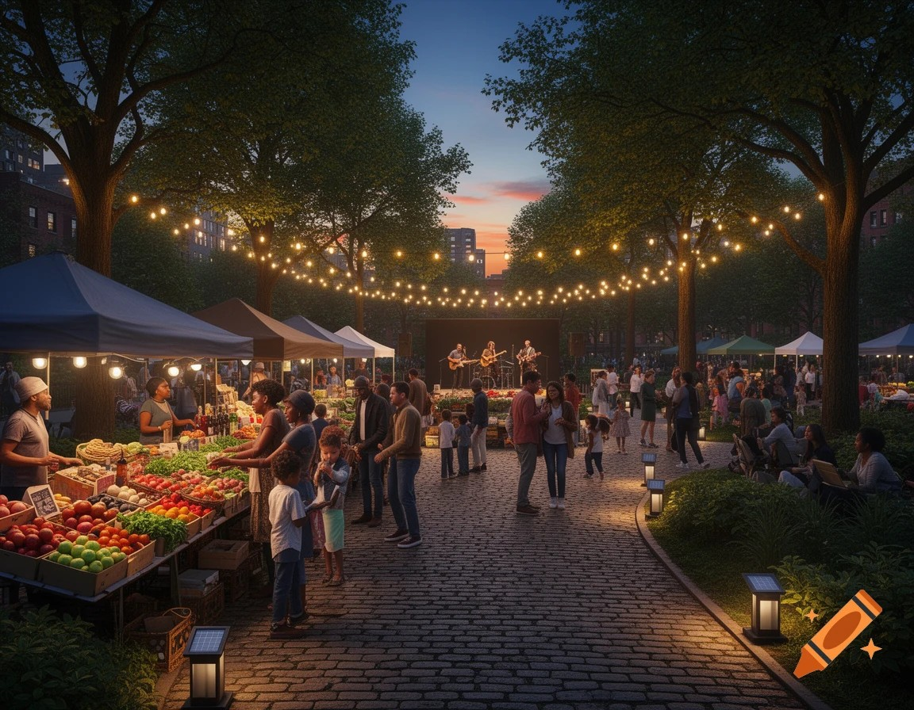
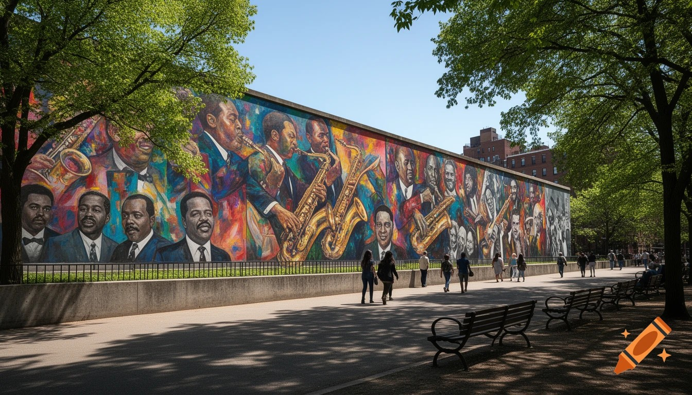

A community-centered plan to transform a West Harlem triangle into a vibrant, walkable destination — honoring the neighborhood's past while welcoming its future.
The Challenge
Montefiore Square sits at the confluence of W 138th Street and Broadway in Hamilton Heights, West Harlem — named for Jewish philanthropist Sir Moses Montefiore. For decades it functioned as little more than a traffic triangle: no seating, poor lighting, and zero programming. Foot traffic bypassed it entirely.
After a $18.4M renovation completed in January 2022 that tripled the square's footprint, the bones are finally there. But programmatic activation, community ownership, and pedestrian comfort remain works in progress — and that's exactly where our proposal picks up.
Visual History
Drag the handle to compare the pre-renovation square with the 2022 redesign — then imagine what targeted programming could unlock next.
Images: Wikimedia Commons (Sept 2018) · NYC Parks / Patch.com (Jan 2022)
The Proposal
Each intervention builds on the 2022 infrastructure — filling gaps that bricks and concrete alone can't solve.
The 36 newly planted saplings need time to mature. Deploy tensile shade sails over the central lawn to immediately reduce urban heat and invite mid-day use.
Supplement the granite walls with moveable café chairs so residents can arrange the space themselves — proven by Bryant Park to dramatically increase dwell time.
Commission a Harlem artist to paint a large-scale mural celebrating jazz and civil rights history on the Broadway-facing retaining wall.
Overlay the 12 new streetlights with warm string lights and solar lanterns to create a welcoming atmosphere after dark and extend usable hours into the evening.
Partner with local orgs to run jazz pop-ups, farmers' markets, and youth activities using the new paved plaza — designed specifically for this kind of activation.
Improve signage connecting the 137th St–City College 1-train stop directly to the square's entrances, turning transit riders into park visitors.
The Site
Bordered by Broadway, W 138th St, and Hamilton Place — steps from the 137th St–City College 1-train stop and surrounded by ~40,000 residents within walking distance.
Implementation
Hold open houses at Community Boards 9 & 10. Engage the Montefiore Park Neighborhood Association. Commission a local artist for the mural. Apply for NYC Cultural programming grants.
Deploy moveable seating and shade sails. Launch weekend programming partnerships. Install string lighting. Measure foot traffic and dwell time before and after to build the case for Phase 3.
Paint the permanent mural, formalize the weekly market and programming calendar with NYC Parks, and establish a resident stewardship committee for long-term community ownership.
AI Guide
Questions about our proposal, the square's history, or urban design in Harlem? Our AI assistant is here to help.
The Future
AI-generated concept renderings of Montefiore Square after full activation — shade sails, community murals, evening markets, and more.

Shade sails, moveable seating, and a vibrant community mural transform the square into a true gathering place.

String lights and solar lanterns create a warm atmosphere for weekly farmers' markets and live jazz performances.

A large-scale mural on the Broadway-facing retaining wall celebrating Harlem's jazz legacy and civil rights history.
Concept imagery generated by AI to illustrate the proposal's potential — not final designs.